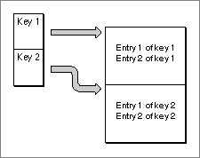
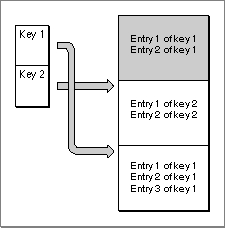
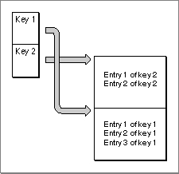

Legacy Document
Important: The information in this document is obsolete and should not be used for new development.
Important: The information in this document is obsolete and should not be used for new development.


Garbage Data
In an editable dictionary, information is continually being added, deleted, or altered. Because it is too time-consuming to regenerate the entire dictionary each time a change is made, unused information called garbage data builds up over time. Garbage data is created whenever the size of the information associated with a key increases or decreases, or if the information is deleted. The data is no longer used by the dictionary.Consider the simple dictionary file in Figure 8-4. It has only two dictionary records; each record has two entries. There is no garbage data in either record.
Figure 8-4 A simple dictionary with no garbage data
 With the addition of one entry to the first record, the Dictionary Manager allocates a new block at the end of the dictionary's resource fork to hold all the entries in the first record, and creates a new index entry that points to the new block. The data the old index entry points to is no longer accessible and becomes garbage data. See Figure 8-5.
Figure 8-5 Creating garbage data in a dictionary
 As the records in a dictionary file are modified, the size of the garbage data continues to increase. The Dictionary Manager keeps track of the amount of garbage data in a dictionary; to obtain the current size of garbage data in a dictionary, you can use the
GetDictionaryInformationfunction (see page 8-24).At some point, you may want to get rid of the garbage data permanently. The
CompactDictionaryfunction (see page 8-33) instructs the Dictionary Manager to create a new copy of the dictionary file, containing only valid entries. Once the new dictionary is constructed, the Dictionary Manager deletes the old one. (If the new dictionary fails to build properly, the original dictionary is preserved intact.) Note thatCompactDictionarydoes not actually compress any data; it simply removes unusable information.Figure 8-6 illustrates the structure of the simple dictionary built in Figure 8-4 and Figure 8-5 after the compaction process. Note that the order of the records in the resource fork may be different from what it was before compaction.
Figure 8-6 Deleting garbage data from a dictionary

- Note
- The Dictionary Manager creates new garbage data only if the size of the associated data is enlarged or reduced or if the associated data is deleted altogether. If you simply rearrange the order of the entries within a single record, without changing the size of the associated data, the Dictionary Manager does not create any garbage data. This feature is especially useful for input methods that support dictionary learning, in which the entries require constant rearrangement according to their frequency of use.